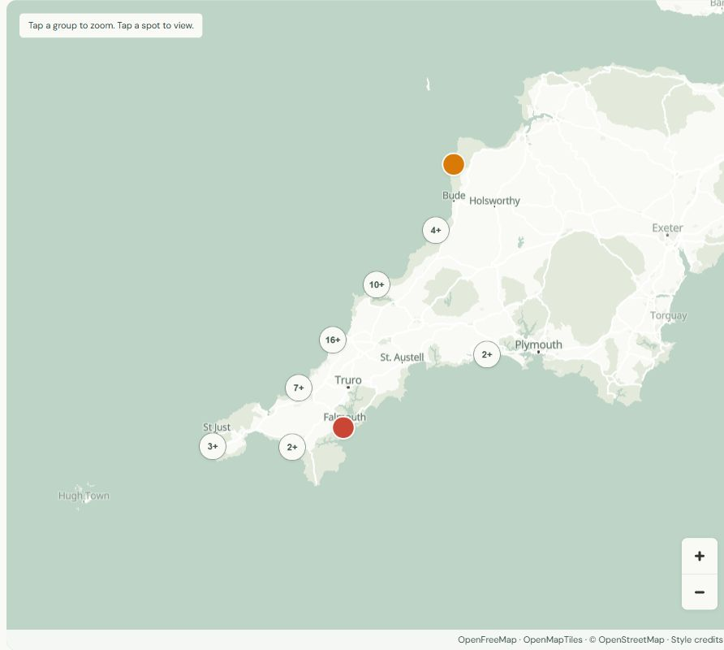
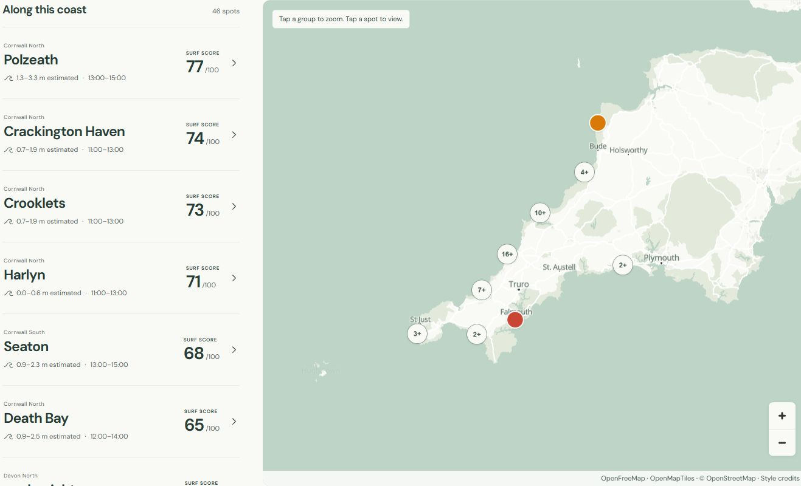
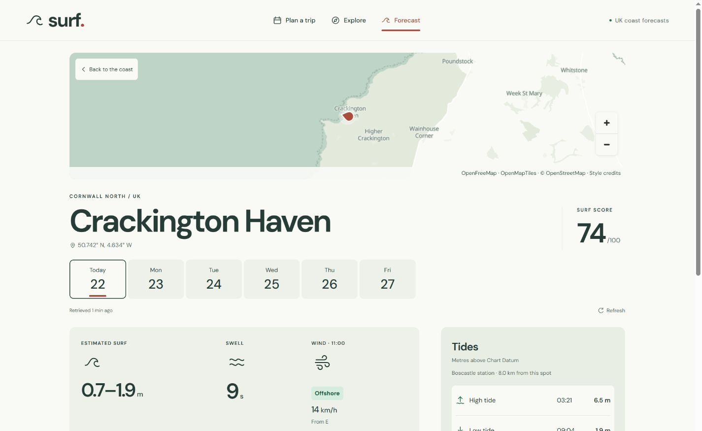

Personal project · Live
Surf
Surf forecasts and trip planning.
A web app for checking conditions at UK surf spots and planning trips around the forecast, daylight and driving time.
Visit surf.dylantodd.dev
About the project
Surf has three main views: a map for finding spots, a forecast view for checking conditions, and a planner for finding sessions within a driving limit.
The API combines marine and weather forecasts from Open-Meteo, calculates a surf-quality score for each beach and stores forecast snapshots in PostgreSQL. It provides up to 120 hours of hourly data, depending on availability.
The frontend is built with React and TypeScript. The trip planner compares two-hour daylight sessions using surf quality and road travel estimates.
Architecture
PlaceholderA basic layout for now. Deployment and service details still to add.
Web app
React + TypeScript
REST API
Java + Spring Boot
PostgreSQL
Forecast snapshots
Open-Meteo
Marine + weather data
The website


Explore
Find spots on the map and compare their forecast scores.

Trip planner
Choose a starting point, dates and a maximum drive.


Forecast
Check conditions and available sessions for a spot.
Screenshots from November 2026. Forecast values change over time.